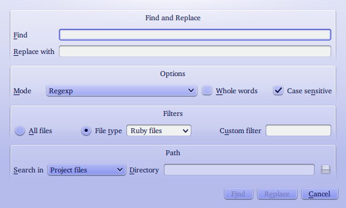

A Ruby IDE written in Ruby
Here’s a list of the plugins included with Ruber1
The autosave plugin is used by other plugins to automatically save some files (which files depends on the plugin) before running certain actions, according to the settings chosen by the user (for example, the Ruby development plugin saves all project files before running the script associated with the project). As user, you don’t interact with the plugin, except to choose how it should behave.
In the Genral page of the Ruber configuration dialog there’s a section for the Autosave plugin. It contains a check box, which allows you to turn autosaving on or off for all plugin, and a checkable list of plugins under the Exceptions label. When autsaving is globally enabled, you can disable it for a plugin by unchecking the corresponding item from the list. Note that, if autosave is disabled globally, there’s no way to enable it only for some plugins. You need to enable it globally and manually disable it for the plugins you don’t want.
The Command plugin allows you to directly interact with Ruber internals. It provides
a tool widget containing a text editor and an Execute button. Any ruby code written
in the text editor is executed in the Ruber environment (in the context of the
toplevel object) by using eval. All exceptions produced by your code are caught
and displayed in a message box, so Ruber won’t crash even if your code here is
incorrect.
This plugin gives you access to all of Ruber power, just as if you were writing a new plugin.
The Find in files plugin is a frontend for rak, which, according to the author, is a grep replacement in pure Ruby which accepts Ruby syntax regular expressions and automatically recurses directories.
To use this plugin, choose the Find and Replace in Files entry from the Edit menu.
This displays a dialog similar to the one in the following picture.

In the Find line edit, enter the text you want to find. It will be interpreted
as a regular expression or as plain text according to the value set in the Mode
combo box. If you want to replace the found occcurrences of the text with something
else, insert the replacement string in the Replace with line edit. You can use
back references here (\1, \2 and so on).
Under the Options caption, you find widgets to control how the search is performed: besides changing the mode as described above, you can decide whether the search should be case sensitive and whether only whole words should match.
The entries under the Filter label can be used to restrict the files to search. Checking the All Files radio button will cause the search to be carried out in all files; checking the File type button, and then one or more of the entries in the combo box next to it will cause the search to be performed only on files of the selected kind. Finally, the Custom filter line edit can be used to enter a regexp (not a shell glob) to add another filter in addition to the one provided by the file type.
Under the Path entry there are the widgets to choose the set of files to search. In the Search in combo box there are two or four entries (depending on whether or not you have an open project):
Obviously the last two entries will only be present if there’s an open project.
The list of files to search is restricted according to the filters defined in the Filters section.
Once you filled the dialog according to your needs, press the Find or the Replace button depending on what you want to do (note that the Replace button becomes the default if the Replace with line edit contains some text).
In response to the Find button, the dialog will be closed and the Find in Files tool widget becomes visible. It contains a tree with the names of the file wehere the text was found, having as children the list of matches. The numbers left to the matches are the corresponding line numbers.
If you clicked the Replace button, instead, the Replace in Files tool widget will be shown. It contains a tree somewhat similar to the one described above, with some important differences. Each match has two columns, labelled “Original text” and “Replacement text” as the names imply, the first contains the text found in the file; the second shows the text as it would be modified. To the left of each entry (both those with the file name and those with the match) there’s a check box. Unchecking the box will exclude that entry from the replacement. Note that unchecking a file entry will exclude all the matches in that file from replacement.
After having inspected the results produced by the match and chosen which replacements you actually want to carry out, you can press the Replace button in the tool widget to perform the changes. Note that, if the contents of a file change between the time it was searched and the time you click this button, the corresponding entries in the tool widget will become disabled, and you won’t be able to do the replacements in it.
If you decide that you don’t want to perform this replacement, you can use the Clear button in the tool widget to empty it. This isn’t actually needed, but it can avoid to press the Replace button by mistake.
If any files on which the replacement was carried is modified in the editor, the plugin will attempt to save it (using the autosave plugin). If you chose not to save them, they won’t be included in the replacement.
The plugin takes care of updating files open in the editor in which replacements have been performed.
This plugin provides a tool widget which lists the files in the project directory in a tree. You can choose whether to display only the files belonging to the project or all the files in the directory by right-clicking in the tool widget and checking or unchecking the Show Only Project Files entry.
Left-clicking on a file will close the tool widget and display the file in the editor; doing so while pressing the Meta key will live the tool widget open.
If no project is open, will disable the tree view.
This plugin allows to run rake tasks for the current project from within Ruber. it requires that rake is installed to work (rake is included in the standard library in ruby 1.9).
The plugin provides the following functionality:
In the Rake page in the Ruber configuration dialog, you can choose the rake
program to use and whether standard output from rake should be synchronized or
not (this is implemented passing -E '$stdout.sync=true' to rake). You can also
setup quick tasks there (see below).
In the Rake page in the project configuration dialog, you can set several options related to rake for the project itself:
VAR1=value1 VAR2=value2 VAR3="value 3" VAR4='value 4'. If you need space
in values, you need to quote the value. Note that the parsing of such strings
may fail in unusual casesTo run tasks for the current project, you can use either the Ruby/Rake/Run Rake Task
or the Ruby/Rake/Project Tasks menu entries. The former will display a dialog
with a list of tasks defined in the rakefile associated with the project; the
second displays a submenu with the same tasks.
Since retrieving tasks from rake takes some time, this list is not update every time the menu or the dialog are displayed (in particular, the first time you display the dialog or the menu, the list may be empty). To update the list, you need to press the Refresh Tasks button in the dialog or choose the Refresh Tasks entry from the submenu.
To run a task from the dialog, select it from the list, then click the Ok button. You can use the line edit above the list to search for a task in the list.
To run a task from the submenu, simply choose the correspoding entry.
Note that you can’t run the default task from either the menu or the dialog. To
do so, use the Ruby/Rake/Run Default Task menu entry.
You can associate a keyboard shortcut to tasks in the current project. To do so, open the project configuration dialog and go to the Rake page. Under the Tasks caption, you’ll find a list of tasks defined in the rakefile. As described above, the list of tasks may not be up-to-date. Use the Refresh task button below to update it. Double-clicking on the Shortcut column of the list will bring up a shortcut editor, where you can choose the shortcut for the corresponding task. You can also add or remove tasks manually by using the Add Tasks and Remove Tasks button.
Quick tasks are task which you configure globally and are availlable for all projects.
They’re meant to be used for tasks you have in each project, so that you don’t have
to configure them each time (for example, almost of my projects have a doc task.
Defining a quick task with that name and assigning a shortcut to it, I can execute
the task with a single key press for any project).
You can execute quick tasks either by using the associated keyboard shortcut or
using the Ruby/Rake/Quick Tasks submenu.
You manage quick tasks from the Rake page of the Ruber configuration dialog. You can add tasks using the Add Task dialog and remove them using the Remove Task dialog. Double clicking on the task name or shortcut, you can edit them.
The RSpec plugin allows to run rspec examples from within Ruber. It will only work from within a project.
This plugin should work with both RSpec 1 and RSpec 2 (although the former is more
tested). It will use RSpec 2 if `which rspec` returns finds something and RSpec
1 otherwise.
The Ruby/Tests menu contains entries to run RSpec for the current project, the
current file or the current line.
To run the spec in the current line, open the spec file, move the cursor to the
line of the example you want to run, then use the Ruby/Tests/Run Current Spec
menu entry.
To run the all tests in the current project, you first need to configure the project.
From the project configuration dialog, go to the RSpec page and choose the directory
where the spec files are (Spec Directory) and the shell glob matching spec files.
Then, use the Ruby/Tests/Run Project Specs menu entry to run all the files
contained in the spec directory and matching the chosen glob.
Running the spec associated with the current file works differently according to
whether the current file is a spec file (that is, it’s in the spec directory and
matches the spec filter as chosen in the project configuration dialog) or not. In
the first case, all the spec in the current file are executed. In the second case,
the plugin looks for a spec associated with it and runs it. By default this means looking in
the spec directory for a file called as the current file but with a _spec inserted
before the .rb extension. You can configure how to associate a file with the
corresponding spec in the RSpec page of the project configuration dialog by changing
the contents of the Pattern line edit (use %f to indicate the base name of the
file).
When you’re working on a file, you can quickly switch to the corresponding spec
file by using the Ruby/Tests/Switch to Spec menu entry. When you’re working on
a spec, you can switch to the corresponding code file by using the Ruby/Tests/Switch to Spec
menu entry. Both entries associate code files and spec files as described above.
From the RSpec page of the project configuration dialog, you can change several
other parameters: the options to pass ruby when running rspec, the path of the
RSpec executable to use, options to be passed to RSpec and whether to instruct
RSpec to generate full backtraces (which is the same as passing the -b option
to RSpec).
The Ruby Development plugin allows you to run the program associated to your project, the file corresponding to the current document or any other file from within Ruber and to display the output in a tool widget.
The Ruby/Run Current File menu entry will run the file associated to the current document
in ruby, while the Ruby/Run Current File will show a dialog where you can choose
the file to run.
The Ruby/Run menu entry will work as Run Current File if there’s no open project
and there’s an open ruby file and as Run File if there is neither an open project
nor an open file. If there’s an open project, instead, it will run the script
associated with the project. By default, it’s a file with the same name as the
project and located in the bin subdirectory of the project directory. You can
change it In the ruby page of the project configuration dialog by entering another
file name in the Path line edit.
This plugin also allows to run scripts in a terminal, rather than in Ruber. This
is mostly useful for scripts which read from standard input, as it (currently)
can’t be done from within Ruber. You can enable this by checking the
Ruby/Run Programs in Terminal menu entry or through the project or document
configuration dialog. The default application is Konsole, which is included in
KDE. If you want, however, you can configure the plugin to use a different terminal
emulator (see below for details).
There are several global settings for this plugin, which you can change in the Ruby page of the Ruber configuration dialog. They are:
ruby, ruby19, ruby18, ruby1.9 and ruby1.8 in your PATH (using
the which program). To add other interpreters, remove the ones you don’t want
to see listed or change the order, use the Availlable interpreters widget%d, which means the
directory where the terminal emulator should be open into and %r which indicates
where the ruby command line should be put. This placeholder must either be enclosed
in spaces or be at the end of the line and preceded by a space. Note that command
line arguments can’t contain spaces.Some parameters used by this plugin can also be configured on a per project base from the Ruby page of the project configuration dialog. They are:
Most of the above options can also be set on a per document base (except, of course, for the project script and the working directory).
The ruby interpreter to use can also be changed temporarily by selecting another
interpreter from the Ruby/Ruby Interpreter menu. This overrides both the global
setting and the setting for the current document or project.
The State plugin allows to save the state of Ruber, of each project and each document between sessions, so that it can be restored when Ruber, the project, or the file is next reopened.
By state, this plugin mean:
As a user, you don’t interact with this plugin, except to configure its behaviour in the Ruber configuration dialog. The options you can change are:
The sytnax checker plugin allows to check the syntax of a ruby or YAML file.
The syntax check is done every time the file is saved and after a pause of at least 1 second while editing the document (that is, if you don’t change the text for at least one second). You can disable this automatic checking from the Ruber configuration dialog in the Syntax page.
The plugin only works for documents associated with a file (it’s not smart enough to find out whether the contents of the document are ruby or YAML code and needs to relay on the extension of the file).
The plugin shows the result of the last syntax check in a LED widget at the right end of the status bar: if it’s green, then there aren’t syntax errors; if it’s red, there are syntax errors. Finally, if it’s gray it means that no syntax check has been done, either because the document isn’t associated with a YAML or ruby file or because the conditions for the check haven’t already happened.
In case of syntax errors, hovering with the mouse over the LED will display a tool tip with the error message of the first error; left-clicking on the LED will move the cursor to the corresponding line. Right-clicking on the LED will display a menu listing all the errors: clicking on an item in the menu moves the cursor to the position of the corresponding error.
The syntax check for ruby files is done using ruby -c, while the YAML syntax
chek is done passing the contents of the file to YAML.load and seeing whether
it raises exceptions.
In the case of ruby files, you can choose the interpreter to use for the syntax check as explained in the description of the Ruby Developer plugin.
1 Actually, there’s another plugin, called Ruby Runner which comes with Ruber. However, this plugin is mostly of support for other plugins. The settings it provides it described together with the Ruby development plugin.
{kind=link}